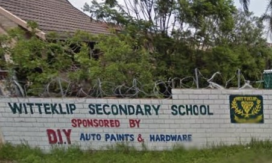

Strong Values
We encourage discipline, respect, responsibility, and pride in every learner.
Public Secondary School • Durban, KwaZulu-Natal
Inspiring excellence, growth, and community pride.
About Our School
Witteklip Secondary School is a South African public secondary school located in Croftdene, Chatsworth, Durban. The school serves over 400 learners and continues to play an important role in developing responsible young people in the community.
Learn more about us →
Why Choose Us
We encourage discipline, respect, responsibility, and pride in every learner.
Our school values parents, learners, staff, and the wider Chatsworth community.
We aim to create opportunities for learners to grow academically and personally.
Quick Links